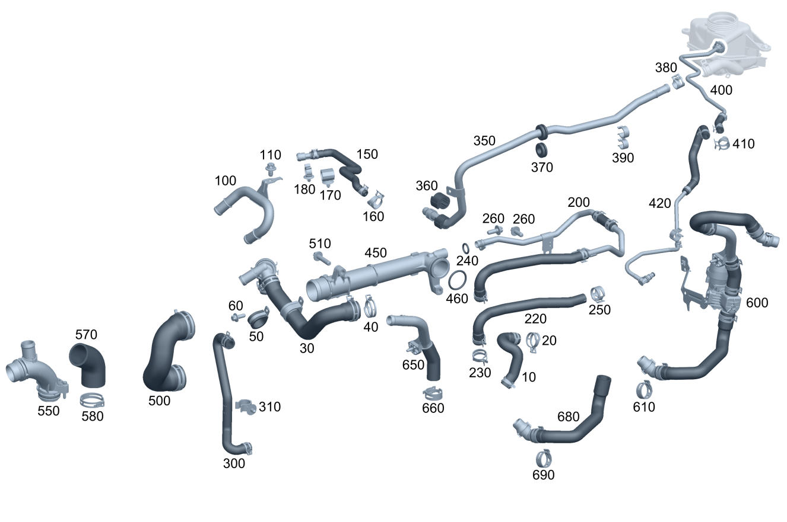

| № | Артикул | Название | Кол. | Примечание | Ограничение |
|---|---|---|---|---|---|
| 10 | A 274 203 01 82 | Шланг ОЖ (COOLANT HOSE) | 1 | К теплообменнику | -M014 |
| 10 | A 274 200 13 82 | Шланг ОЖ (COOLANT HOSE) | 1 | К теплообменнику | -(F907/M014) |
| 10 | A 274 200 38 82 | Шланг системы охлаждения (COOLANT HOSE) | 1 | К теплообменнику | -(F907/M014) |
| 10 | A 274 200 38 82 | Шланг системы охлаждения (COOLANT HOSE) | 1 | К теплообменнику | (F205/F213/F253)+A701 |
| 10 | A 274 200 38 82 | Шланг системы охлаждения (COOLANT HOSE) | 1 | К теплообменнику | A701+382K |
| 20 | A 203 995 03 05 | хомут (CLAMP) | 1 | К теплообменнику; 12\-21 MM | |
| 20 | A 007 997 20 90 | хомут (CLAMP) | 1 | К термостату; 12\-22 MM | |
| 20 | A 203 995 10 05 | Пружинный хомут (SPRING HOSE CLAMP) | 1 | К теплообменнику; 12/20 MM | F167/F172/F205/F212+924/F213/F238/F253/F447/F448 |
| 20 | A 203 995 10 05 | Пружинный хомут (SPRING HOSE CLAMP) | 1 | К термостату; 12/20 MM | F167/F172/F205/F212+924/F213/F238/F253/F447/F448 |
| 30 | A 274 200 24 82 | Шланг ОЖ (COOLANT HOSE) | 1 | Между термостатом и водяным насосом | |
| 30 | A 274 200 15 82 | Шланг ОЖ (COOLANT HOSE) | 1 | Между термостатом и водяным насосом | (F172/F205/F213/F253/F167/F238)+-920/F447+ME05 |
| 30 | A 274 200 03 00 | Шланг системы охлаждения (COOLANT HOSE) | 1 | Между термостатом и водяным насосом | (F172/F205/F213/F253/F167/F238)+-920/F447+ME05 |
| 30 | A 274 200 03 00 | Шланг системы охлаждения (COOLANT HOSE) | 1 | Между термостатом и водяным насосом | |
| 30 | A 274 200 04 00 | Шланг системы охлаждения (COOLANT HOSE) | 1 | Между термостатом и водяным насосом | |
| 30 | A 274 200 26 82 | Шланг ОЖ (COOLANT HOSE) | 1 | Между термостатом и водяным насосом | (F212+924/M014/(F172/F205/F213/F238/F253)+M014)+-920 |
| 30 | A 274 200 26 82 | Шланг ОЖ (COOLANT HOSE) | 1 | Между термостатом и водяным насосом | ((F172/F205/F213/F238/F253)+M014)+-920 |
| 30 | A 274 200 26 82 | Шланг ОЖ (COOLANT HOSE) | 1 | Между термостатом и водяным насосом | ((F172/F205/F213/F238/F253)+M014)+-920 |
| 30 | A 274 200 40 82 | Шланг системы охлаждения (COOLANT HOSE) | 1 | Между термостатом и водяным насосом | ((F172/F205/F213/F238/F253)+M014)+-920 |
| 30 | A 274 200 40 82 | Шланг системы охлаждения (COOLANT HOSE) | 1 | Между термостатом и водяным насосом | ((F172/F205/F213/F238/F253)+M014)+-920 |
| 30 | A 274 200 04 00 | Шланг системы охлаждения (COOLANT HOSE) | 1 | Между термостатом и водяным насосом | (F205/F213/F253)+A701 |
| 30 | A 274 200 40 82 | Шланг системы охлаждения (COOLANT HOSE) | 1 | Между термостатом и водяным насосом | (F205/F213/F253)+M014+A701 |
| 30 | A 274 200 04 00 | Шланг системы охлаждения (COOLANT HOSE) | 1 | Между термостатом и водяным насосом | (F205/F213/F253)+A701+382K |
| 30 | A 274 200 40 82 | Шланг системы охлаждения (COOLANT HOSE) | 1 | Между термостатом и водяным насосом | (F205/F213/F253)+M014+A701+382K |
| 30 | A 274 200 27 82 | Шланг ОЖ (COOLANT HOSE) | 1 | Между термостатом и водяным насосом | F447/F448/F907 |
| 30 | A 274 200 41 82 | Шланг системы охлаждения (COOLANT HOSE) | 1 | Между термостатом и водяным насосом | F448 |
| 40 | A 000 995 40 05 | Пружинный хомут (SPRING HOSE CLAMP) | 1 | К трубопроводу; 27 MM | |
| 40 | A 230 995 02 05 | Пружинный хомут (SPRING HOSE CLAMP) | 1 | К термостату; 29/34 MM | |
| 40 | A 203 995 09 05 | Пружинный хомут (SPRING HOSE CLAMP) | 1 | К водяному насосу; 38.5\-42.5MM | |
| 50 | A 094 990 69 11 | Хомут (CLAMP) | 1 | Крепление трубопровода системы охлаждения | -(F212+924/(F172/F205/F213/F253)+M014/M014) |
| 50 | N 916016 032201 | Хомут | 1 | Крепление трубопровода системы охлаждения; 32/15 MM | F212+924/(F172/F205/F213/F253)+M014/M014 |
| 60 | N 910143 006001 | Винт с 6-гр. глвк (HEXALOBULAR SCREW) | 1 | M6X16 | |
| 60 | N 910143 006002 | Винт с 6-гр. глвк (HEXALOBULAR SCREW) | 1 | M6X20 | (F205/F213/F238)+920 |
| 60 | N 910143 006002 | Винт с 6-гр. глвк (HEXALOBULAR SCREW) | 1 | M6X20 | 920 |
| 100 | A 274 203 04 02 | Трубопровод ОЖ | 1 | Обратная магистраль отопителя | -(920/F167/F172/F205/F212+924/F213/F238/F253/F447/F448/M014) |
| 100 | A 274 203 12 02 | Трубопровод ОЖ (COOLANT LINE) | 1 | Обратная магистраль отопителя | -(920/F167/F172/F205/F213/F238/F253/F447/F448/F907/M014) |
| 110 | N 000000 004310 | Винт с 6-гранной головкой (HEXAGON HEAD BOLT) | 1 | M6X10 | -(F167/F172/F205/F213/F238/F253/F447/F448/F907) |
| 150 | A 274 200 00 82 | Шланг ОЖ | 1 | К головке блока цилиндров | -(F167/F172/F205/F212+924/F213/F238/F253/F447/F448/M014) |
| 150 | A 274 200 09 82 | Шланг ОЖ (COOLANT HOSE) | 1 | К головке блока цилиндров | -(F167/F172/F205/F212+924/F213/F238/F253/F447/F448/M014) |
| 150 | A 274 200 22 82 | Шланг ОЖ (COOLANT HOSE) | 1 | К головке блока цилиндров | -(F090/F167/F172/F205/F213/F238/F253/F447/F448/F907) |
| 160 | A 000 995 75 05 | Пружинный хомут (SPRING HOSE CLAMP) | 1 | К крышке клапанного механизма | -920 |
| 170 | A 000 994 45 48 | предохранитель (SECURING) | 2 | К трубопроводу системы охлаждения | -(F090/F167/F172/F205/F213/F238/F253/F447/F448/F907) |
| 170 | A 001 991 08 71 | Крепежная клипса (FASTENING CLIP) | 1 | К трубопроводу системы охлаждения | F167/F172/F205/F212+924/F213/F253/M014 |
| 180 | A 000 995 96 77 | Держатель трубопровода (LINE BRACKET) | 1 | -(F090/F167/F172/F205/F213/F238/F253/F447/F448/F907) | |
| 200 | A 274 200 07 51 | Трубопровод ОЖ (COOLANT LINE) | 1 | К водяному насосу | -F205 |
| 200 | A 274 200 01 51 | Трубопровод ОЖ (COOLANT LINE) | 1 | К водяному насосу | F167/F172/F205+-M014/F212+924/F213/F447/F253 |
| 200 | A 274 200 17 51 | Трубопровод охлаждения (COOLANT LINE) | 1 | К водяному насосу | F167/F172/F205/F213/F238/F253/F447/F448 |
| 200 | A 274 200 17 51 | Трубопровод охлаждения (COOLANT LINE) | 1 | К водяному насосу | |
| 200 | A 274 200 44 00 | Трубопровод охлаждения (COOLANT LINE) | 1 | К водяному насосу [402] БОЛЬШЕ НЕ ПОСТАВЛЯЕТСЯ | |
| 200 | A 274 200 18 51 | Трубопровод охлаждения (COOLANT LINE) | 1 | К водяному насосу | F907/(F172/F205/F213/F238/F253)+M014 |
| 200 | A 274 200 18 51 | Трубопровод охлаждения (COOLANT LINE) | 1 | К водяному насосу | F907/M014 |
| 200 | A 274 200 17 51 | Трубопровод охлаждения (COOLANT LINE) | 1 | К водяному насосу | F205+-M014 |
| 200 | A 274 200 18 51 | Трубопровод охлаждения (COOLANT LINE) | 1 | К водяному насосу | F205+M014+(806/807+057) |
| 220 | A 274 203 03 82 | - Шланг ОЖ (COOLANT HOSE) | 1 | К масляному радиатору [402] БОЛЬШЕ НЕ ПОСТАВЛЯЕТСЯ | -(F205/F213) |
| 220 | A 274 203 03 82 | - Шланг ОЖ (COOLANT HOSE) | 1 | К масляному радиатору [402] БОЛЬШЕ НЕ ПОСТАВЛЯЕТСЯ | (F167/F172/F205/F212+924/F213/F238/F253/F447/F448)+-M014 |
| 220 | A 274 200 36 82 | - Шланг системы охлаждения (COOLANT HOSE) | 1 | К масляному радиатору [417] БОЛЬШЕ НЕ ПОСТАВЛЯЕТСЯ, ЗАКАЗЫВАТЬ КОМПЛЕКТ ПОСТАВКИ | F907/(F172/F205/F213/F238/F253)+M014 |
| 220 | A 274 200 36 82 | - Шланг системы охлаждения (COOLANT HOSE) | 1 | К масляному радиатору [417] БОЛЬШЕ НЕ ПОСТАВЛЯЕТСЯ, ЗАКАЗЫВАТЬ КОМПЛЕКТ ПОСТАВКИ | F907/M014 |
| 220 | A 274 203 03 82 | - Шланг ОЖ (COOLANT HOSE) | 1 | К масляному радиатору [402] БОЛЬШЕ НЕ ПОСТАВЛЯЕТСЯ | F205 |
| 220 | A 274 200 36 82 | - Шланг системы охлаждения (COOLANT HOSE) | 1 | К масляному радиатору [417] БОЛЬШЕ НЕ ПОСТАВЛЯЕТСЯ, ЗАКАЗЫВАТЬ КОМПЛЕКТ ПОСТАВКИ | F205+M014+(806/807+057) |
| 230 | A 005 997 01 90 | - Хомут для шланга (HOSE CLAMP) | 4 | 14\-24 MM | |
| 230 | A 005 997 01 90 | - Хомут для шланга (HOSE CLAMP) | 1 | 14\-24 MM | F907/M014 |
| 230 | A 005 997 01 90 | - Хомут для шланга (HOSE CLAMP) | 1 | 14\-24 MM | F205+-M014 |
| 230 | A 005 997 01 90 | - Хомут для шланга (HOSE CLAMP) | 1 | 14\-24 MM | F205+M014+(806/807+057) |
| 240 | A 022 997 98 45 | - Кольцевая прокладка (O-RING) | 1 | [402] БОЛЬШЕ НЕ ПОСТАВЛЯЕТСЯ | (F172/F213/F238/F253)+M014 |
| 240 | A 022 997 98 45 | - Кольцевая прокладка (O-RING) | 1 | [402] БОЛЬШЕ НЕ ПОСТАВЛЯЕТСЯ | -M014 |
| 250 | A 007 997 20 90 | хомут (CLAMP) | 1 | 12\-22 MM | |
| 260 | N 910143 006001 | Винт с 6-гр. глвк (HEXALOBULAR SCREW) | 3 | Крепление трубопровода системы охлаждения; M6X16 | |
| 260 | N 910143 006001 | Винт с 6-гр. глвк (HEXALOBULAR SCREW) | 1 | Крепление трубопровода системы охлаждения; M6X16 | M014/(F172/F205/F213/F253)+M014 |
| 260 | N 910143 006001 | Винт с 6-гр. глвк (HEXALOBULAR SCREW) | 2 | Крепление трубопровода системы охлаждения; M6X16 | F907/(F172/F205/F213/F238/F253)+M014 |
| 260 | N 910143 006001 | Винт с 6-гр. глвк (HEXALOBULAR SCREW) | 2 | Крепление трубопровода системы охлаждения; M6X16 | F907/M014 |
| 260 | N 910143 006001 | Винт с 6-гр. глвк (HEXALOBULAR SCREW) | 1 | К головке блока цилиндров слева сзади; M6X16 | F167/F205/F213/F238/F253 |
| 260 | N 910143 006001 | Винт с 6-гр. глвк (HEXALOBULAR SCREW) | 1 | К головке блока цилиндров слева сзади; M6X16 | F167/F205/F213/F253 |
| 260 | N 000000 003648 | Винт с 6-гр. глвк (HEXALOBULAR SCREW) | 1 | К головке блока цилиндров слева сзади; M6X25 | (F205/F213/F238/F253)+M014 |
| 260 | N 910143 006001 | Винт с 6-гр. глвк (HEXALOBULAR SCREW) | 1 | К головке блока цилиндров слева сзади; M6X16 | (F205/F213/F238)+(920/M014)/F253+M014 |
| 260 | N 910143 006001 | Винт с 6-гр. глвк (HEXALOBULAR SCREW) | 1 | Головка блока цилиндров сзади; M6X16 | (F205/F213/F253/F238)+-(920/M014/184) |
| 260 | N 910143 006001 | Винт с 6-гр. глвк (HEXALOBULAR SCREW) | 1 | Головка блока цилиндров сзади; M6X16 | F907/(F205/F213/F238/F253)+M014 |
| 260 | N 910143 006001 | Винт с 6-гр. глвк (HEXALOBULAR SCREW) | 1 | Головка блока цилиндров сзади; M6X16 | (F213/F238/F253)+M014 |
| 260 | N 910143 006001 | Винт с 6-гр. глвк (HEXALOBULAR SCREW) | 1 | Головка блока цилиндров сзади; M6X16 | (F213/F253)+M014 |
| 300 | A 274 200 35 82 | Шланг системы охлаждения (COOLANT HOSE) | 1 | Обратная магистраль охладителя ОГ | F907/(F172/F205/F213/F238/F253)+M014 |
| 300 | A 274 200 35 82 | Шланг системы охлаждения (COOLANT HOSE) | 1 | Обратная магистраль охладителя ОГ | F907/M014 |
| 300 | A 274 200 35 82 | Шланг системы охлаждения (COOLANT HOSE) | 1 | Обратная магистраль охладителя ОГ | F205+(806/807+057)+M014 |
| 310 | A 011 988 47 78 | Зажимная скоба (CLAMPING BRACKET) | 1 | F907/(F172/F205/F213/F238/F253)+M014 | |
| 310 | A 011 988 47 78 | Зажимная скоба (CLAMPING BRACKET) | 1 | F907/M014 | |
| 310 | A 011 988 47 78 | Зажимная скоба (CLAMPING BRACKET) | 1 | F205+(806/807+057)+M014 | |
| 350 | A 274 203 26 02 | Трубопровод ОЖ (COOLANT LINE) | 1 | К расширительному бачку | F172/F205/F212+924/F213/F253/M014 |
| 350 | A 274 203 28 02 | Трубопровод ОЖ (COOLANT LINE) | 1 | К расширительному бачку | F172/F205/F212+924/F253 |
| 350 | A 274 203 40 02 | Трубопровод охлаждения (COOLANT LINE) | 1 | К расширительному бачку | F172/(F205/F253)+(805/806/807+-057)/F205+(ME05/ME06) |
| 360 | A 000 997 93 44 | - Проставочное кольцо (SPACER RING) | 1 | F172/(F205/F253)+(805/806/807+-057)/F205+(ME05/ME06) | |
| 360 | A 000 997 93 44 | - Проставочное кольцо (SPACER RING) | 1 | F172/(F205/F253)+(805/806/807+-057)/F205+(ME05/ME06) | |
| 360 | A 000 997 93 44 | - Проставочное кольцо (SPACER RING) | 1 | F172/(F205/F253)+(805/806/807+-057)/F205+(ME05/ME06) | |
| 370 | A 115 997 06 81 | - втулка (GROMMET) | 1 | 23 MM | F172/(F205/F253)+(805/806/807+-057)/F205+(ME05/ME06) |
| 380 | A 140 995 01 05 | Пружинный хомут (SPRING HOSE CLAMP) | 1 | 14.7\-16.5 MM/ 12 MM | F172/F205/F212+924/F213/F253/M014 |
| 380 | A 000 995 35 07 | Хомут (CLAMP) | 1 | 12\-22 MM | F172/F205/F212+924/F213/F253/M014 |
| 390 | A 901 995 00 32 | хомут (CLAMP) | 1 | F205+807+920+-057 | |
| 400 | A 274 200 07 82 | Шланг ОЖ (COOLANT HOSE) | 1 | От расширительного бачка к охладителю наддувочного воздуха | F172/(F205/F253)+(805/806/807+-057)/F205+(ME05/ME06) |
| 400 | A 274 200 07 82 | Шланг ОЖ (COOLANT HOSE) | 1 | От расширительного бачка к охладителю наддувочного воздуха | F172/(F205/F253)+(805/806/807+-057)/F205+(ME05/ME06) |
| 400 | A 274 200 07 82 | Шланг ОЖ (COOLANT HOSE) | 1 | От расширительного бачка к охладителю наддувочного воздуха | F172/F205+ME05 |
| 410 | A 203 995 00 05 | - Пружинный хомут (SPRING HOSE CLAMP) | 1 | 16/12 MM | F172/F205/F212+924/F213/F253/M014 |
| 420 | A 167 501 75 01 | Вентиляционный трубопр. (BLEED LINE) | 1 | Трубопровод системы охлаждения к охладителю наддувочного воздуха | F167+ME05 |
| 420 | A 167 501 75 01 | Вентиляционный трубопр. (BLEED LINE) | 1 | Трубопровод системы охлаждения к охладителю наддувочного воздуха | F167+ME05 |
| 450 | A 274 200 00 53 | Трубопровод ОЖ (COOLANT LINE) | 1 | К блоку цилиндров | (F167/F172/F205/F213/F238/F253)+-M014 |
| 450 | A 274 200 01 53 | Трубопровод охлаждения (COOLANT LINE) | 1 | К блоку цилиндров | (F167/F172/F205/F213/F238/F253/F447+ME05)+-M014 |
| 450 | A 274 200 01 53 | Трубопровод охлаждения (COOLANT LINE) | 1 | К блоку цилиндров | |
| 450 | A 274 200 06 00 | Трубопровод охлаждения (COOLANT LINE) | 1 | К блоку цилиндров | |
| 450 | A 274 200 02 53 | Трубопровод охлаждения | 1 | К блоку цилиндров [402] БОЛЬШЕ НЕ ПОСТАВЛЯЕТСЯ | ((F205/F213/F253)+A701)+-M014 |
| 450 | A 274 200 02 53 | Трубопровод охлаждения | 1 | К блоку цилиндров [402] БОЛЬШЕ НЕ ПОСТАВЛЯЕТСЯ | ((F205/F213/F253)+A701+382K)+-M014 |
| 460 | A 024 997 63 45 | - Кольцевая прокладка (O-RING) | 1 | (F167/F172/F205/F213/F238/F253)+-M014 | |
| 460 | A 024 997 63 45 | - Кольцевая прокладка (O-RING) | 1 | ||
| 500 | A 274 200 29 82 | Шланг ОЖ (COOLANT HOSE) | 1 | К водяному насосу и трубопроводу системы охлаждения | (F167/F172/F205/F213/F238/F253/F447+ME05)+-M014 |
| 500 | A 274 200 29 82 | Шланг ОЖ (COOLANT HOSE) | 1 | К водяному насосу и трубопроводу системы охлаждения | |
| 510 | N 910143 008004 | Винт с 6-гр. глвк (HEXALOBULAR SCREW) | 3 | Крепление трубопровода системы охлаждения; M8X35 | (F167/F172/F205/F213/F238/F253)+-M014 |
| 510 | N 910143 008004 | Винт с 6-гр. глвк (HEXALOBULAR SCREW) | 2 | Крепление трубопровода системы охлаждения; M8X35 | (F167/F172/F205/F213/F238/F253)+-M014/F447+ME05 |
| 510 | N 910143 008004 | Винт с 6-гр. глвк (HEXALOBULAR SCREW) | 2 | Крепление трубопровода системы охлаждения; M8X35 | |
| 550 | A 274 200 01 56 | Штуцер впуска ОЖ (COOLANT INLET CONNECTION) | 1 | (F167/F172/F205/F213/F238/F253)+-M014 | |
| 550 | A 274 200 02 56 | Патрубок впуска ОЖ (COOLANT INLET CONNECTION) | 1 | (F167/F172/F205/F213/F238/F253)+-M014/F447+ME05 | |
| 550 | A 274 200 02 56 | Патрубок впуска ОЖ (COOLANT INLET CONNECTION) | 1 | ||
| 550 | A 274 200 02 56 | Патрубок впуска ОЖ (COOLANT INLET CONNECTION) | 1 | (F205/F213/F253)+(ME05/ME06)+(460/494/835)+-M014 | |
| 570 | A 274 200 34 82 | Шланг системы охлаждения (COOLANT HOSE) | 1 | (F167/F172/F205/F213/F238/F253)+-M014 | |
| 580 | A 639 995 01 05 | хомут (CLAMP) | 2 | (F167/F172/F205/F213/F238/F253)+-M014 | |
| 600 | A 274 200 11 51 | Подводящий трубопровод (FEED LINE) | 1 | Между термостатом и трубопроводом отопителя | F205/F213/F238/F253 |
| 600 | A 274 200 16 51 | Подводящий трубопровод (FEED LINE) | 1 | Между термостатом и трубопроводом отопителя | F205/F213/F238/F253 |
| 600 | A 274 200 20 51 | Подводящий трубопровод (FEED LINE) | 1 | Между термостатом и трубопроводом отопителя | F205/F213/F238/F253 |
| 600 | A 274 200 25 51 | Подводящий трубопровод (FEED LINE) | 1 | Между термостатом и трубопроводом отопителя | F205/F213/F238/F253 |
| 600 | A 274 200 25 51 | Подводящий трубопровод (FEED LINE) | 1 | Между термостатом и трубопроводом отопителя | F205/F213/F253 |
| 600 | A 274 200 20 51 | Подводящий трубопровод (FEED LINE) | 1 | Между термостатом и трубопроводом отопителя | (F205/F213/F238/F253)+(ME05/ME06) |
| 600 | A 274 200 24 51 | Подводящий трубопровод (FEED LINE) | 1 | Между термостатом и трубопроводом отопителя | (F205/F213/F238/F253)+M014 |
| 600 | A 274 200 16 51 | Подводящий трубопровод (FEED LINE) | 1 | Между термостатом и трубопроводом отопителя | (F205/F213/F238)+(920/M014)/F253+M014 |
| 600 | A 274 200 11 51 | Подводящий трубопровод (FEED LINE) | 1 | Между термостатом и трубопроводом отопителя | (F205+-(803/804/805)/F213/F238/F253)+M014 |
| 600 | A 274 200 24 51 | Подводящий трубопровод (FEED LINE) | 1 | Между термостатом и трубопроводом отопителя | (F205+-(803/804/805)/F213/F238/F253)+M014 |
| 600 | A 274 200 24 51 | Подводящий трубопровод (FEED LINE) | 1 | Между термостатом и трубопроводом отопителя | (F205+-(803/804/805)/F213/F238/F253)+M014 |
| 600 | A 274 200 07 00 | Подводящий трубопровод (FEED LINE) | 1 | Между термостатом и трубопроводом отопителя | (F213/F238)+M014+809 |
| 600 | A 274 200 07 00 | Подводящий трубопровод (FEED LINE) | 1 | Между термостатом и трубопроводом отопителя | (F213/F238)+M014 |
| 600 | A 274 200 07 00 | Подводящий трубопровод (FEED LINE) | 1 | Между термостатом и трубопроводом отопителя | F213+M014 |
| 600 | A 274 200 22 00 | Подводящий трубопровод (FEED LINE) | 1 | Между термостатом и трубопроводом отопителя | (F205/F253)+M014+809 |
| 600 | A 274 200 22 00 | Подводящий трубопровод (FEED LINE) | 1 | Между термостатом и трубопроводом отопителя | F253+M014 |
| 600 | A 167 830 35 00 | Шланговый трубопровод (HOSE LINE) | 1 | Между термостатом и трубопроводом отопителя | F167+ME05 |
| 600 | A 274 200 11 00 | Подводящий трубопровод (FEED LINE) | 1 | Между термостатом и трубопроводом отопителя | F907 |
| 610 | A 230 995 01 05 | - Пружинный хомут (SPRING HOSE CLAMP) | 2 | К подающему трубопроводу; 24.0/26.8 MM | F205/F213/F238/F253 |
| 610 | A 230 995 01 05 | - Пружинный хомут (SPRING HOSE CLAMP) | 2 | К подающему трубопроводу; 24.0/26.8 MM | F205/F213/F238/F253 |
| 610 | A 094 990 93 02 | - Хомут (CLAMP) | 1 | К подающему трубопроводу; 25/40 | F205/F213/F238/F253 |
| 610 | A 094 990 93 02 | - Хомут (CLAMP) | 1 | К подающему трубопроводу; 25/40 | F907/(F205/F213/F238/F253)+M014 |
| 650 | A 000 995 40 05 | - Пружинный хомут (SPRING HOSE CLAMP) | 2 | К подающему трубопроводу; 27 MM | (F205/F213/F238/F253)+-184 |
| 650 | A 000 995 40 05 | - Пружинный хомут (SPRING HOSE CLAMP) | 1 | К подающему трубопроводу; 27 MM | (F205/F213/F238/F253)+(ME05/ME06)+-184 |
| 650 | A 000 995 40 05 | - Пружинный хомут (SPRING HOSE CLAMP) | 5 | К подающему трубопроводу; 27 MM | F907/(F205+(806/807+057)/F213/F238/F253)+M014+-184 |
| 650 | A 000 995 40 05 | - Пружинный хомут (SPRING HOSE CLAMP) | 3 | К подающему трубопроводу; 27 MM | F907 |
| 660 | A 274 200 15 51 | - Трубка ОЖ | 1 | [417] БОЛЬШЕ НЕ ПОСТАВЛЯЕТСЯ, ЗАКАЗЫВАТЬ КОМПЛЕКТ ПОСТАВКИ | (F205/F213/F238/F253)+-(184/920/M014) |
| 660 | A 274 200 15 51 | - Трубка ОЖ | 1 | [417] БОЛЬШЕ НЕ ПОСТАВЛЯЕТСЯ, ЗАКАЗЫВАТЬ КОМПЛЕКТ ПОСТАВКИ | (F205/F213/F238/F253)+M014+-(920/M014) |
| 680 | A 274 200 28 82 | - Шланг ОЖ | 1 | [417] БОЛЬШЕ НЕ ПОСТАВЛЯЕТСЯ, ЗАКАЗЫВАТЬ КОМПЛЕКТ ПОСТАВКИ | F205/F213/F238/F253+-(920/M014/184) |
| 680 | A 274 200 28 82 | - Шланг ОЖ | 1 | [417] БОЛЬШЕ НЕ ПОСТАВЛЯЕТСЯ, ЗАКАЗЫВАТЬ КОМПЛЕКТ ПОСТАВКИ | F907/(F205/F213/F238/F253)+M014+-(920/M014/184) |
| 690 | A 000 995 40 05 | - Пружинный хомут (SPRING HOSE CLAMP) | 1 | 27 MM | (F205/F213/F238/F253)+-(920/M014/184) |
| 690 | A 000 995 40 05 | - Пружинный хомут (SPRING HOSE CLAMP) | 1 | 27 MM | F907/(F205/F213/F238/F253)+M014+-(920/M014/184) |
| 700 | A 274 200 17 82 | Шланг ОЖ (COOLANT HOSE) | 1 | Между термостатом и водяным насосом | 920 |
| 700 | A 274 200 25 82 | Шланг ОЖ (COOLANT HOSE) | 1 | Между термостатом и водяным насосом | 920 |
| 700 | A 274 200 02 31 | Запорный клапан (CUTOFF VALVE) | 1 | Между термостатом и водяным насосом | (F205/F213/F238)+920 |
| 700 | A 274 200 37 82 | Шланг системы охлаждения (COOLANT HOSE) | 1 | Между термостатом и водяным насосом | (F205/F213/F238)+920 |
| 700 | A 274 200 37 82 | Шланг системы охлаждения (COOLANT HOSE) | 1 | Между термостатом и водяным насосом | 920 |
| 710 | A 274 203 11 82 | - Шланг ОЖ (COOLANT HOSE) | 1 | [417] БОЛЬШЕ НЕ ПОСТАВЛЯЕТСЯ, ЗАКАЗЫВАТЬ КОМПЛЕКТ ПОСТАВКИ | (F205/F213/F238)+920+-M014 |
| 710 | A 274 203 11 82 | - Шланг ОЖ (COOLANT HOSE) | 1 | [417] БОЛЬШЕ НЕ ПОСТАВЛЯЕТСЯ, ЗАКАЗЫВАТЬ КОМПЛЕКТ ПОСТАВКИ | 920 |
| 720 | A 274 203 12 82 | - Шланг ОЖ (COOLANT HOSE) | 1 | [417] БОЛЬШЕ НЕ ПОСТАВЛЯЕТСЯ, ЗАКАЗЫВАТЬ КОМПЛЕКТ ПОСТАВКИ | (F205/F213/F238)+920+-M014 |
| 720 | A 274 203 12 82 | - Шланг ОЖ (COOLANT HOSE) | 1 | [417] БОЛЬШЕ НЕ ПОСТАВЛЯЕТСЯ, ЗАКАЗЫВАТЬ КОМПЛЕКТ ПОСТАВКИ | 920 |
| 750 | A 274 203 03 02 | Трубопровод ОЖ (COOLANT LINE) | 1 | Подача к клапану рециркуляции ОГ | 920+-(F205/F213/F238) |
| 760 | A 274 098 04 80 | Прокладка, однослойная (METAL SEAL, SINGLE LAYER) | 1 | К подающему трубопроводу | 920+-(F205/F213/F238) |
| 770 | N 910143 006002 | Винт с 6-гр. глвк (HEXALOBULAR SCREW) | 2 | Трубопровод системы охлаждения к клапану рециркуляции ОГ; M6X20 | 920 |
| 770 | N 910143 006000 | Винт с 6-гр. глвк (HEXALOBULAR SCREW) | 2 | Трубопровод системы охлаждения к клапану рециркуляции ОГ; M6X12 | (F205/F213/F238)+920 |
| 770 | N 910143 006000 | Винт с 6-гр. глвк (HEXALOBULAR SCREW) | 2 | Трубопровод системы охлаждения к клапану рециркуляции ОГ; M6X12 | 920 |
| 780 | N 000000 004310 | Винт с 6-гранной головкой (HEXAGON HEAD BOLT) | 1 | Крепление трубопровода системы охлаждения; M6X10 | 920+-(F167/F172/F205/F213/F238/F253) |
| 790 | A 274 203 13 82 | Шланг ОЖ (COOLANT HOSE) | 1 | К теплообменнику ОГ | (F205/F213/F238)+920 |
| 790 | A 274 203 13 82 | Шланг ОЖ (COOLANT HOSE) | 1 | К теплообменнику ОГ | 920 |
| 800 | A 274 200 10 82 | Шланг ОЖ (COOLANT HOSE) | 1 | К головке блока цилиндров | 920 |
| 800 | A 274 200 23 82 | Шланг ОЖ (COOLANT HOSE) | 1 | К головке блока цилиндров | 920+-(F167/F172/F205/F212+924/F213/F238/F253/F447/F448) |
| 810 | A 140 995 01 05 | Пружинный хомут (SPRING HOSE CLAMP) | 1 | К крышке клапанного механизма; 14.7\-16.5 MM/ 12 MM | 920 |
| 810 | A 000 995 35 07 | Хомут (CLAMP) | 1 | К крышке клапанного механизма; 12\-22 MM | 920 |
| 820 | A 000 994 45 48 | предохранитель (SECURING) | 2 | К трубопроводу системы охлаждения | -(F090/F167/F172/F205/F213/F238/F253/F447/F448/F907) |
| 820 | A 001 991 08 71 | Крепежная клипса (FASTENING CLIP) | 1 | К трубопроводу системы охлаждения | F167/F172/F205/F212+924/F213/F253/M014 |
| 830 | A 000 995 96 77 | Держатель трубопровода (LINE BRACKET) | 1 | -(F090/F167/F172/F205/F213/F238/F253/F447/F448/F907) | |
| 850 | A 274 203 23 02 | Водяная трубка (WATER LINE) | 1 | К радиатору системы рециркуляции ОГ | (F205/F213/F238)+920 |
| 850 | A 274 203 23 02 | Водяная трубка (WATER LINE) | 1 | К радиатору системы рециркуляции ОГ | 920 |
| 870 | A 274 203 05 82 | Шланг ОЖ (COOLANT HOSE) | 1 | Подводящий трубопровод радиатора рециркуляции ОГ | (F205/F213/F238)+920 |
| 870 | A 274 203 05 82 | Шланг ОЖ (COOLANT HOSE) | 1 | Подводящий трубопровод радиатора рециркуляции ОГ | 920 |
Позиций: 178 · подписано на схемах: 178 · колесо — плавный зум в курсор, перетаскивание — пан, двойной клик — зум, клик по артикулу — скопировать.